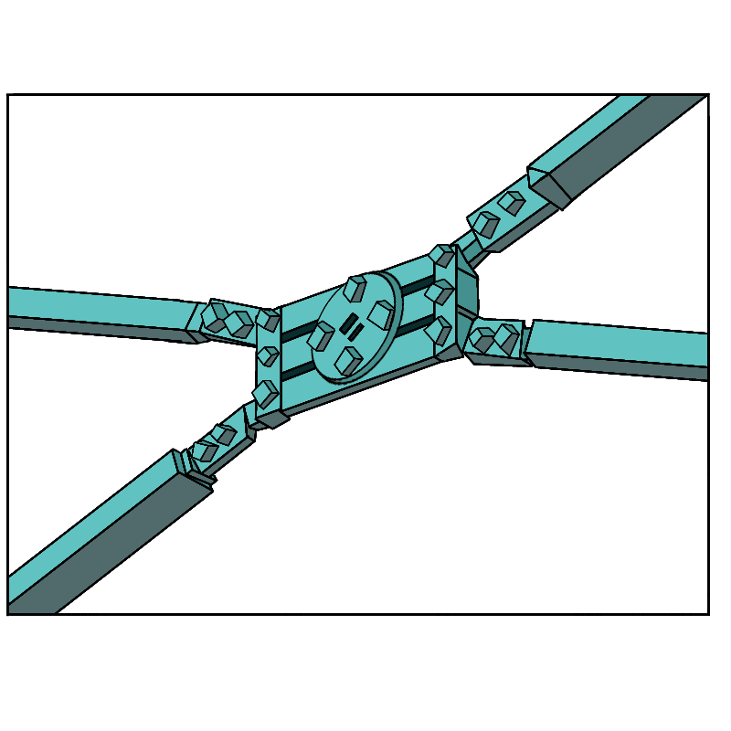
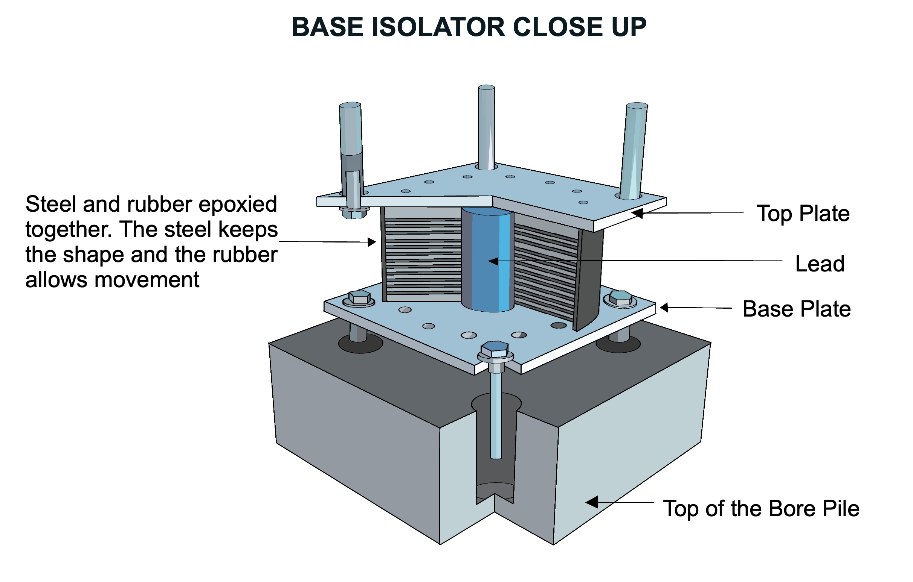

After analysing the impact of earthquakes on these conventional resisting systems,
various studies have been conducted in order to improve the performance of structures
in high seismic regions.
The Goal
Ideally, these systems will not just to minimize the structural elements’
damage, but also minimize the repair costs of the aftermath and ensure a
faster recovery.

Dampers
Damping is the process of dissipating energy out of a system in order to
resist vibrations. An undamped object doesn’t stop vibrating, and as damping
increases, the vibration of an object decreases.
Seismic dampers are manufactured and designed in buildings to reduce the
energy produced by the earthquake, force, and acceleration.
There are different types of dampers: viscous damper, friction damper,
yielding damper, magnetic damper, and tuned mass damper.
Base Isolation Systems
These structures are intentionally separated from the building’s foundation
with base isolators. Base isolators, made of rubber and steel, reduce the
transfer of the vibration from the earthquake to reach the structure through
the multiple bearing rubber pads between the structure and the foundation.
Base isolators essentially weaken the connection between the structure and the
foundation. This concept led to analysing the rocking behavior of the structure
during an earthquake, since as the building separates from the foundation,
it will cause more rocking compared to yielding and
cracking at the foundation.

Rocking Frame
To resist earthquake ground motion, engineers often rely on the controlled
rocking and self centering seismic resistant system.
In this system, the weight of the structure can return the whole structure to its original
position during an earthquake, resulting in little to no residual deformation.
Additionally, post tensioning strands are added in the frame to add another self
centering force and eliminate the residual deformation. The structural damage
is hence limited.